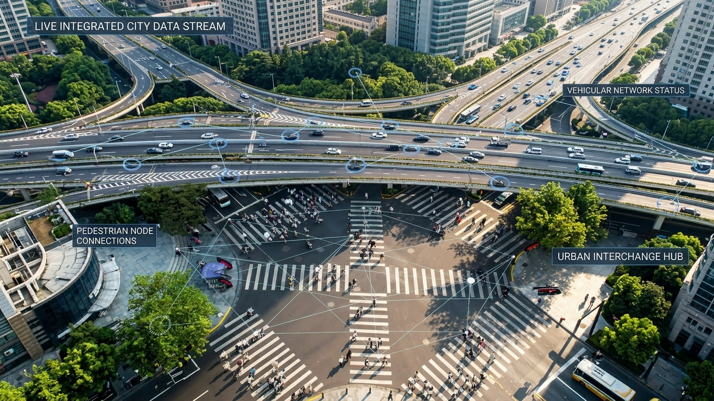
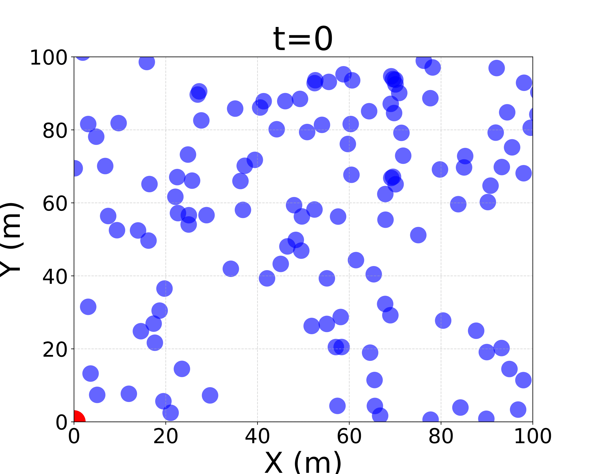
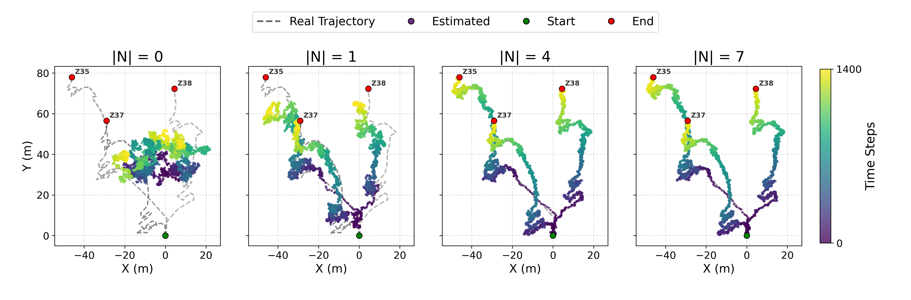
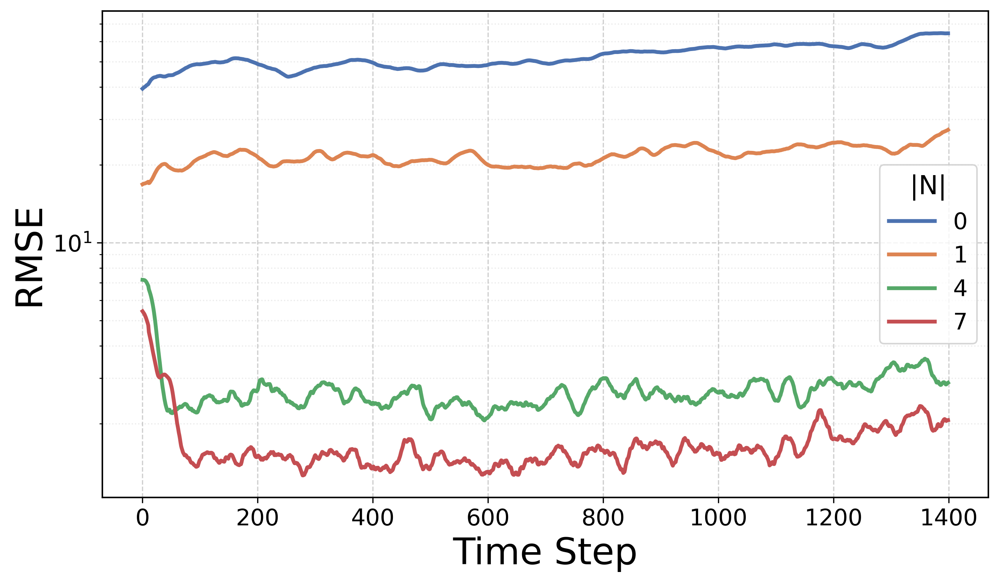
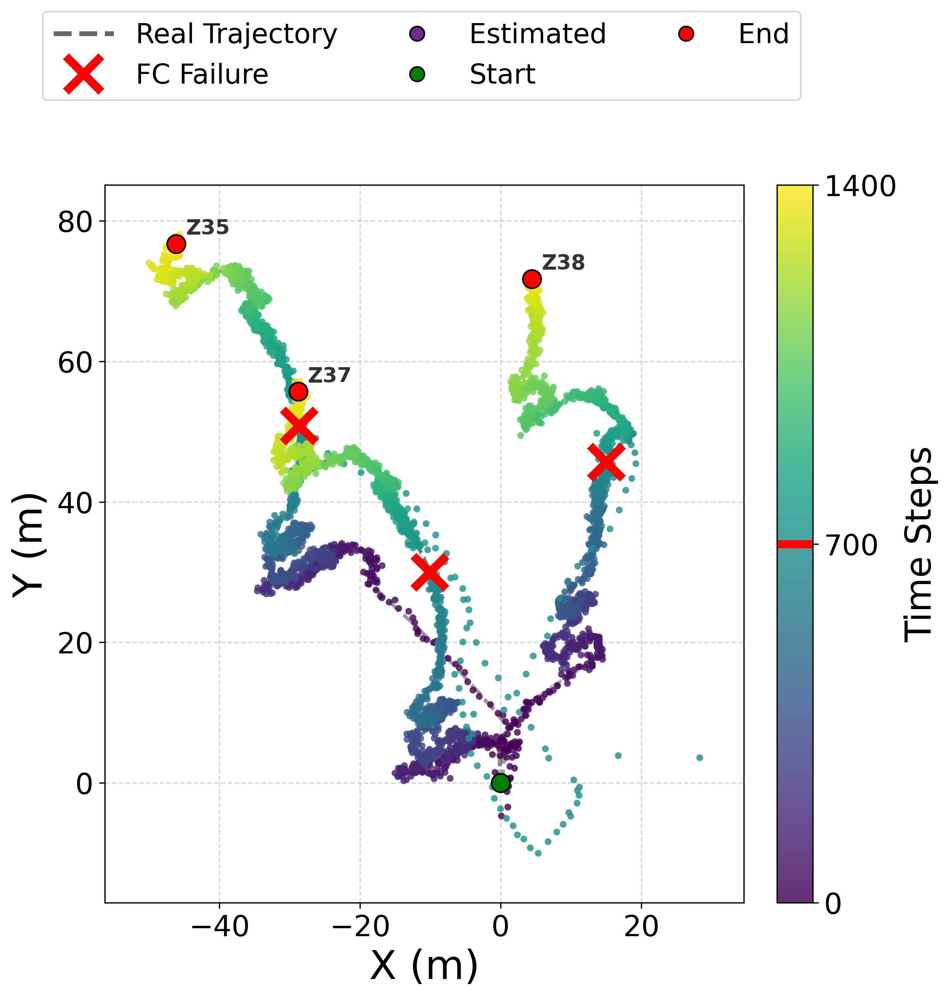

Multi-Target Tracking via Field-Based Distributed Particle Filtering
Angela Cortecchia, Davide Domini, Giovanni Ciatto, Roberto Casadei, and Mirko Viroli
Department of Computer Science and Engineering (DISI)
Alma Mater Studiorum — University of Bologna, Cesena, Italy

Motivation: distributed estimation in changing environments
Distributed evidence, changing infrastructure
Many cyber-physical systems estimate a hidden dynamical state from distributed, noisy observations.
But the sensing system changes too:
- devices move, fail, or disconnect;
- topology and observability vary;
- different devices become relevant over time.

Particle filters maintain a distribution of plausible states
Four operations update the belief
01 · Predict — Where could the state move next?
02 · Weight — Which hypotheses agree with the observations?
03 · Resample — Keep plausible hypotheses; discard unlikely ones.
04 · Estimate — Use the particles to represent the current belief.

The estimate is a distribution, not only a point.
Particle Filter Over Time


Distribution turns filtering into a coordination problem
Centralized particle filtering
All observations are available to a single estimator.
$$p(x_t \mid y_{1:t})$$
Distributed particle filtering
Each device observes only local information.
$$y_{t,k} = h_k(x_t, v_{t,k})$$
Different DPF approaches mainly differ in where fusion happens, what is exchanged, how far information propagates, and which nodes participate.
Conventional DPF architectures are rigid by design
Fixed architecture
Limited adaptation
Aggregate Computing makes collective coordination programmable
A macroprogramming approach to distributed systems

Reason globally; execute locally
Aggregate Computing describes the collective behavior of a system instead of programming each device separately.
Programs manipulate computational fields: distributed values that evolve across the network.
One collective program becomes an evolving computational field
From specification to field
01 · Collective specification
The programmer describes the behavior of the device network.
02 · Local rounds
Each device evaluates the same program using sensors, memory, and neighbor messages.
03 · Emergent field
The collection of local values forms the global computational field.
Every round repeats three phases
- Sense inputs and incoming neighbor messages.
- Compute new local state and outbound messages.
- Interact / Act by sharing results and affecting the environment.
The model does not require global lockstep.
Keep particle filtering standard; make coordination adaptable
This is not another DPF algorithm. It is a programmable coordination layer around established filtering logic.
Filtering logic
- prediction
- weighting
- resampling
- estimation
Coordination choices
- where information is fused;
- what information is exchanged;
- how far information propagates;
- which devices participate;
- which devices take coordination roles.
One field-based model supports multiple adaptive organizations
DPF as a self-organizing collective process
- Self-organization through local neighborhood interactions
- Self-healing through runtime role reassignment after failures
- Self-adaptation to target motion and changing spatial conditions
One model, multiple DPF organizations
- neighborhood-level measurement aggregation
- leader-based fusion with dynamic leader election
- decentralized estimation with fixed or mobile observers
- adaptive spatial participation and coordination regions
Experimental Evaluation
Scenario
Target trajectories derive from the KABR wildlife telemetry dataset.
Each target emits a radio-like signal: closer sensors receive stronger, cleaner evidence; farther sensors receive weaker, noisier evidence.
Evaluated configurations
Each sensor runs a local PF; only measurements are shared.
Measurements converge toward an elected, replaceable leader.
Sensors reorganize spatially around the moving targets.

Experiment 1: neighborhood sharing improves local estimates
Local filters, shared evidence
Each sensor runs its own multi-target particle filter.
Sensors exchange target-indexed measurements—not particle sets—and combine neighbor observations in the likelihood computation.
$$|\mathcal{N}| \in {0, 1, 4, 7}$$
Sparse evidence
Richer evidence

Measurement sharing sharply reduces tracking error

Cooperation improves accuracy
- With little or no sharing, local filters may remain inaccurate or fail to converge.
- Increasing $|\mathcal{N}|$ reduces RMSE and improves stability.
- Particle sets remain local; only measurements are exchanged.
- Larger neighborhoods trade communication for estimation quality.
Experiment 2: the fusion role survives leader failure
Elect, fuse, fail, recover
01 · Election
A geometrically central active sensor becomes leader.
02 · Fusion
Measurements converge toward the leader.
03 · Failure
The current leader is removed during execution.
04 · Recovery
A new leader is elected; tracking resumes after a short transient.

Experiment 3: mobile sensors preserve informative observations
The infrastructure follows the targets
- Every sensor continues to run a local multi-target particle filter.
- Filtering remains decentralized.
- A temporary coordinator manages motion only.
- Sensors preserve a grid-like formation.
- The formation centroid follows the estimated target centroid.
Keeping sensors near the targets produces more informative measurements and lower estimation error.

The same formulation enables three self-* properties
Self-organization
Self-healing
Self-adaptation
Field-based DPF separates estimation from coordination
What the work establishes
- DPF becomes a self-organizing collective process.
- One estimation substrate supports multiple organizations.
- Local cooperation, leader replacement, and mobile observers expose three self-* properties.
- Neighborhood size, connectivity, and spatial configuration shape estimation quality.
Future work
- spatially adaptive filtering and selective activation
- self-organizing coordination regions
- larger target populations
- richer deployment conditions
- heterogeneous sensing modalities
- accuracy, communication, resilience, and scalability trade-offs
Thank you for the attention!
Reproducible experiments here:
GitHub: domm99/experiments-acsos-2026-DPF-multi-object-tracking